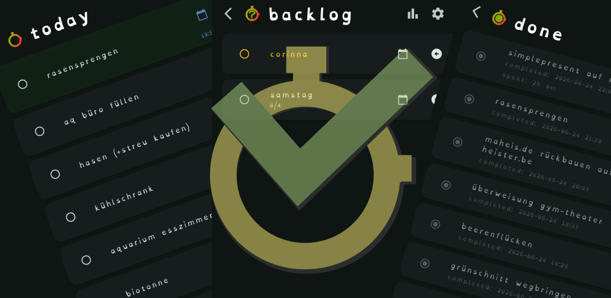

Heute bleibt heute
Termine, Prioritäten und Fortschritt in einer Ansicht. Automatische Sortierung räumt auf, ohne dir im Weg zu stehen.
Dein Tag. Deine Reihenfolge.
SimplePresent bringt deine Aufgaben dorthin, wo dein Kopf gerade ist: in den Fokus. Ruhig, direkt und mit voller Kontrolle über deine Daten.

Die einfache Idee
Für Menschen, die an vielen Dingen arbeiten und trotzdem bei einer Sache bleiben wollen. Drei Listen, klare Zustände und genau so viel Struktur, wie dein Tag braucht.
Werkzeuge für den Flow
Termine, Prioritäten und Fortschritt in einer Ansicht. Automatische Sortierung räumt auf, ohne dir im Weg zu stehen.
Stoppuhr und manuelle Zeiterfassung machen aus einem diffusen „später“ eine nachvollziehbare Spur.
Notizen, Checklisten und Erinnerungen leben direkt an der Aufgabe. Aufklappen, weitermachen.
Deine Daten, deine Entscheidung
Speichere lokal oder verbinde deinen eigenen Server. SimplePresent schickt nichts ungefragt in eine fremde Cloud.
Mehr über den Sync ↗simple present